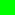
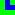
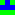
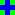
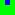

Overview
This is the FlexGen Cookbook. It will walk you through the steps needed to generate a map with the FlexGen library, using samples from the example application. The example application is included in the "example" directory in the FlexGen release.
Map Units
Map units are the basic building blocks of maps and are the smallest element present in a map. They represent the fundamental elements that will compose your map. In the example application, a map is generated that has rivers cutting through grassland. The map units in the example application are grass and river. Each map unit in your map must have a unique name, as the name is used to differentiate one map unit from another. Map units can be constructed as in the following example:
MapUnit grass = new MapUnit( "Grass" );
MapUnit river = new MapUnit( "River" );
Map Tiles
Map tiles are the key element in maps. You must define several map tile types that will be used to create your map. Maps are generated by randomly selecting a map tile type and then placing a map tile of the specified type in a randomly selected empty location and orientation. A particular location and orientation can only be considered where the four edges of the selected map tile type match the corresponding edges of map tiles adjacent to the location. This process is repeated until there are no empty locations remaining in the map.
A map tile type is comprised of a two-dimensional grid of map units that define the map tile type. Map tile types also have a unique name (to identify them), a weight (to make some map tile types more likely to be selected than others), an array of map tile edges defining the four edges of the map tile type (the edges are specified in the following order: top, right, bottom left), and an array of map tile orientations defining the distinct orientations available for the map tile type. While you can use any size for the two-dimensional grid of map units, the grid must be the same size vertically as it is horizontally. Also, every map tile type must have the same size grid.
The example application uses six different tile types. They represent various combinations of the grass and river map units that can be used to generate a map that has rivers cutting through grassland. The following table gives a graphical representation of these six tile types.
| All Grass | : |  |
| Straight River | : | |
| Corner River | : |  |
| Three Way River | : |  |
| Four Way River | : |  |
| Dead End River | : |  |
The following example demonstrates how to construct the straight river map tile type. Note that the top edge of the map tile type is river, the right edge is grass, the bottom edge is river, and the left edge is grass. Also note that due to the symmetry of the grid of map units, the map tile type has only two distinct orientations.
MapTileType straightRiver = new MapTileType(
"Straight River", 1000,
new MapUnit[][]
{
{ grass, river, grass },
{ grass, river, grass },
{ grass, river, grass }
},
new MapTileEdge[]
{
riverEdge,
grassEdge,
riverEdge,
grassEdge
},
new MapTileOrientation[]
{
MapTileOrientation.UPRIGHT,
MapTileOrientation.CLOCKWISE
} );
The following example demonstrates how to construct the corner river map tile type. Note that the top edge of the map tile type is river, the right edge is river, the bottom edge is grass, and the left edge is grass. Also note that due to the lack of symmetry of the grid of map units, the map tile type has all four orientations. Finally, note that the weight of the corner river map tile type is 500 while the weight of the straight river map tile type is 1000. That means that the corner river map tile type is half as likely to be selected as the straight river map tile type.
cornerRiver = new MapTileType(
"Corner River", 500,
new MapUnit[][]
{
{ grass, river, grass },
{ grass, river, river },
{ grass, grass, grass }
},
new MapTileEdge[]
{
riverEdge,
riverEdge,
grassEdge,
grassEdge
},
new MapTileOrientation[]
{
MapTileOrientation.UPRIGHT,
MapTileOrientation.CLOCKWISE,
MapTileOrientation.FLIPPED,
MapTileOrientation.COUNTER_CLOCKWISE
} );